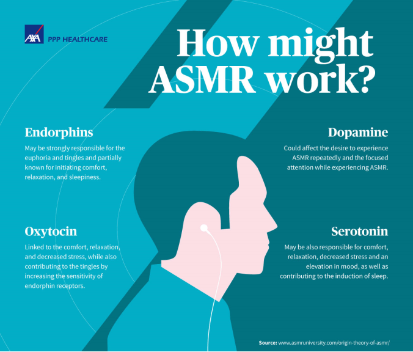

ASMR stands for Autonomous Sensory Meridian Response, and it refers to a tingling, relaxing sensation. ASMR content, often found on platforms like YouTube, typically includes whispering, tapping, scratching, or other soft, soothing sounds. It's important to note that not everyone experiences ASMR, and the intensity and triggers can vary from person to person.
Many people find ASMR content relaxing and use it as a way to de-stress and unwind. The gentle, soothing sounds can promote a sense of calm and tranquility. Hence the website idea name being Tranquil.
Some individuals use ASMR videos or audio as a sleep aid. The relaxing nature of ASMR can help people fall asleep faster and experience better sleep quality.
ASMR may help reduce feelings of stress and anxiety for some individuals. The tingling sensation and the focus on the gentle sounds can distract from stressful thoughts and promote a sense of relaxation.
ASMR communities and content can help people feel more connected to others who share their interests and triggers. This sense of community can have positive social and mental health benefits
It's important to note that not everyone experiences ASMR, and the effects can vary from person to person. Some people may find ASMR content uninteresting or even uncomfortable. If you do find it beneficial, it can be a useful tool for relaxation, stress relief, and enhancing your overall well-being.
I see this as an opportunity to expose this sort of content to a bigger audience by helping the other ASMRtists out. Monetizing this website could be an idea, but that would defeat the purpose of the NPO element. On overall, an estimated 20% of the population exposed to social media and technology that is capable of using a web browser or YouTube have listened or currently listen to ASMR content, this website could hold the possibility of increasing that percentage by 1%, but that’s nothing more than a goal.